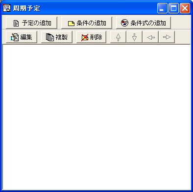
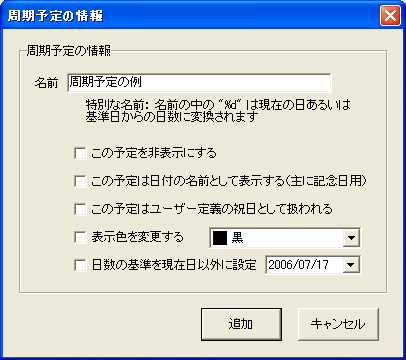
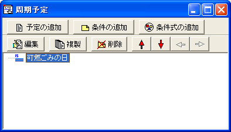
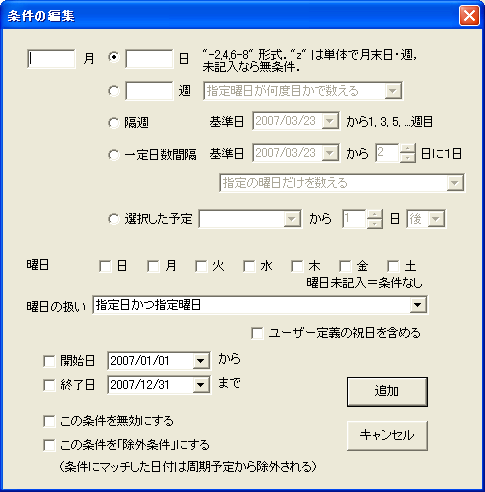
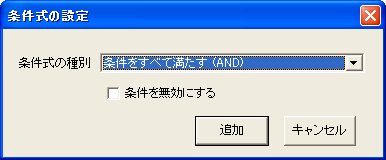
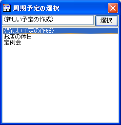

周期予定は，特定条件に該当する日すべてに予定を設定します． 「毎週火曜日」や「毎年の記念日」といった， 周期的に訪れる予定を一括して記入するために提供されています．
周期予定は，その予定日に表示する内容の設定と， その予定が表示されるべき日付を指定する条件という ２つのアイテムによって構成されます．
周期予定の作成および編集は， すべて周期予定ダイアログから行います．
メニューから [カレンダー]-[周期予定] を選ぶことで， 周期予定ダイアログが表示されます．
なお，周期予定の編集中（ダイアログの表示中）は， カレンダー上には周期予定は表示されません．
予定を追加するには，[予定の追加]ボタンを押下するか， 右クリックでコンテキストメニューから[周期予定の追加]を選択します．
周期予定に対しては，次の項目を設定します．
| 項目名 | 意味 |
|---|---|
| 名前 | 条件が該当した日付に表示される文字列を設定します． この名前の中に "%d" という文字列が含まれる場合， 現在の日（あるいは基準日）からの日数に置換されます． |
| [この予定を非表示にする] | 予定を非表示にすることができます． この予定が不要になった場合に使用します． |
| [この予定は日付の名前として表示する] | 祝日の名前などと同様，日付の横に予定の名前が表示されるようになります． 記念日など，日付の名前として表示したい場合に使用します． |
| [この予定はユーザー定義の祝日として扱われる] | この予定に該当する日は祝日として扱われるようになります． 日付の表示色が赤色になり（これは非表示でも有効です）， 予定の条件で，「祝日のときには翌日にずれる」といった条件を使う場合に この予定を祝日として含めることができるようになります． |
| [表示色を変更する] | 予定は，標準では フォントの設定の [周期予定] で指定された フォントを使用して表示されます．日付の名前として選択された場合は， [休日名]フォントで表示されます．この設定を変更すると， フォントの表示色を標準(設定されたフォントの色)から変更することができます． |
| [日数の基準を現在日以外に設定] | 名前の中に含まれる "%d" の文字列は，通常は現在日からの日数に 置換されますが，この項目にチェックを付けると 指定した日付からの日数に変更できます． 「締め切りまであと%d日」のように， 特定の日付までの日数を表示したい場合に使用してください． |
[追加] ボタンを押すと， ダイアログに追加された予定の名前が表示されます． また，左側に付くアイコンは，その周期予定が 通常の予定であるか，祝日の定義であるか（赤色）， 日付の名前として表示するか，といった状態を示します．
作成された予定に対して，「どの日がその予定に該当するか」という 条件を作成します．これには， 条件を追加したい周期予定を選択して[条件の追加]ボタンを押下するか， 右クリックでコンテキストメニューを開き，[条件の追加]を選択します．
周期予定として設定できる条件のタイプは５種類です．
毎月あるいは特定の月の特定の日を指定するために使用します． ハイフンを用いて連続した複数の日を選択したり， "z" を記入することで，月末の日を指定することもできます．
-3 ３日まで 1,4,7 １日，４日，７日 1,z 月の先頭の日と末日 28- ２８日から月末まで
通常は曜日と組み合わせて， 「第１火曜日」などの条件を設定するために使います． 指定するための式は，日付で使うものと同様です．
-3 第３週まで 1,4 第１週と第４週 1,z 月の先頭の週と最後の週 28- ２８日から月末まで
週の数え方は，一般的な[指定曜日が何度目かで数える]方式を採用しています． つまり，「第１水曜日」は，その月の最初の水曜日（月によりますが１日〜７日のどれか）を指し， "z" で与えられる「最後の週」は，月末の７日間を指します．
オプションとして提供されている[ISO 8601]方式を選択すると，月曜を週の始まりと定義し， 「４日以上その月の日が含まれる」週をその月に属する週とします．
基準日として選択した日付からその６日後までを 「第１週」として，それ以降の１，３，５…と奇数番目の週のすべての日を 抽出します．曜日の条件指定と併用することを仮定しています．
基準日として選択した日から，指定した日数間隔のすべての日を選択します． たとえば，基準日として1月15日を選び，「５日に１日」と設定したとすると， １月15日，20日，25日，30日，２月４日が該当するのと同様に，１月10日，５日も該当します． 期間を絞りたい場合は，開始日・終了日の設定と併用します．
曜日による効果は，２種類から選択可能です． 「指定の曜日だけを数える（たとえば平日３日ごとに１日）」か， 「すべての日を数えて指定の曜日にだけ表示する（たとえば土日に重なったら前にずらす）」かを選択できます．
「選択した予定から○日前・後」の指定は，作成済みの周期予定で 作成した条件から日数を数えることができます． たとえば，「月末」が指定されている周期予定に対して， 「その５日前」といった条件の指定が可能になります． 特定の曜日だけを数えたい場合は，曜日の条件と，祝日の取り扱いを設定してください． 基準となる周期予定は，非表示であっても問題ありませんが， 周期予定ダイアログのリスト上で，自分自身よりも上側に並んでいる予定（先に決定される予定） だけが有効です． それ以外の予定を選択すると周期予定ダイアログを閉じようとするときにエラーメッセージが表示されますので， 先に決定されるべきものが予定の上側に来るよう，並べ替えてください．
上記の条件に対して，以下に挙げる月，曜日，祝日の扱い，適用する期間が組み合わせることが可能です．
月の条件には，該当する月をカンマ区切りあるいはハイフンによる範囲指定で入力します． 何も記入しない場合は，毎月として扱われます． "z" が使えないことを除くと，日や週の定義と同様です．
-3 １月から３月 1,4,7 １月，４月，７月 8-11 ８月から１１月 7- ７月から１２月
「曜日」は，「曜日の扱い」オプションと組み合わせて使用します． 何もチェックをつけない場合は，条件なしとして扱われます． 以下に，設定の例を示します．
"第３火曜日" 週に "3"， 曜日に "火", 曜日の扱いに "指定曜日"
"１１月７日" 月に "11", 日に "7"
"毎月末" 日に "z"
"毎月１８日以降の最初の平日" 日に "18"，曜日に "月，火，水，木，金"，
曜日の扱いに "指定日以降で最初の指定曜日(祝日なら次の指定曜日)"
"６月１０日以降の隔週の土曜日" 隔週で，基準日に 6/10，曜日に "土"．
6/10 が土曜日でない場合，それ以降の最初の土曜が最初に該当する．
"月末から５営業日前" "毎月末" の予定を事前に作成しておき，
その予定から５日前を選択．
また，曜日に "月，火，水，木，金"，
祝日の扱いに「指定曜日から祝日を除いた日を数える」を設定する．
また，この予定自体は，周期予定のリスト上で
"毎月末" の予定よりも下側に来なくてはならない．
曜日の扱いに祝日が含まれるものについては， [ユーザー定義の祝日を含める]をチェックすることで， 祝日としてすでに作成されている（周期予定ダイアログのリストで， その予定よりも上側に並べられている）予定を条件に含めることができます．
Note: このオプションは，1.3.0より前のバージョンでは 「祝日」として設定されている予定の条件としては使えませんでしたが， 仕様変更により利用可能になりました． そのかわり，予定の並び順序の影響を受けるようになっています．
開始日および終了日は，その条件のマッチを行う範囲を指定します． その予定が一定の期間（たとえば１年間）だけ有効にするために使用できます．
条件を削除することなく，一時的に無効化しておきたい場合にチェックしてください．
この条件にマッチした場合，他の条件の成否に関わらず， 条件がマッチしなかったことに（周期予定を表示させないことに）できます． 除外条件は，一種の NOT 演算ですが， 同じ階層に並んでいる条件に対して優位に働き， 同じ階層に並ぶ除外条件のうち，どれかひとつでもマッチすると， 同じ階層の条件すべてが無効化されます．
作成された条件は，ツリー構造で表示されます．
複数の条件がある場合，それらの「いずれかを満たす」日が 含まれるようになります． そのほかの組み合わせ（「条件のすべてを満たす」など）を 使いたい場合は，「条件式の追加」を選択します．
条件式の設定では，使用したい条件式を選択することができます． 条件式は，ツリー構造上でその子供として設定された ノード（条件または条件式）の条件を， 与えられた方式に従って連結します．
作成された予定，条件，条件式は， 次の方法で編集・移動・複製，削除ができます．
変更したい予定あるいは条件，条件式を選択して， [編集]ボタンをクリックするか Enter キーを押します． 右クリックからのコンテキストメニューも利用可能です． また，末端の条件の場合はダブルクリックも有効です．
周期予定は，上側に並んでいる予定ほど決定の優先度が高くなっています． 祝日として設定されている予定と，祝日によって移動する予定が並べられた場合， 上側に置かれている予定のほうから順番に日付が決定されていきます． （この振る舞いは1.3.0から加わりました．）
移動したい予定あるいは条件，条件式を選択して， [↓][↑]ボタンを押すことによって上下の順番を変更することができます． また，[←][→]ボタンを押すことによって，条件や条件式を， 直前の条件式の子ノードとして設定することが可能です．
条件および条件式の移動は，マウスのドラッグ＆ドロップでも実行できます． ドロップ先が条件式ならその条件式の子ノードとなります．
変更したい予定あるいは条件，条件式を選択して， [複製]ボタンをクリックします． 右クリックからのコンテキストメニューも利用可能です． 複製は，子ノードの内容も含めて，すべてコピーされます． 複製された内容は，複製もとノードの弟として追加されます．
条件および条件式は，CTRL キーを押しながら マウスのドラッグ＆ドロップを行うことでもコピーすることができます．
削除したい予定あるいは条件，条件式を選択して， [削除]ボタンをクリックするか，Delete キーを押します． 配下のノードもすべて削除されます．
周期予定に対しては，カレンダー上から 特定の日付・曜日の追加および特定の日付に対する除外条件の作成が可能です．
日付，曜日を右クリックすると， コンテキストメニューの中に「この日(曜日)を周期予定に加える ...」 という項目があります．これを選ぶと， 次のような周期予定選択ウィンドウが表示されます．
その日を条件として追加したい周期予定を選択すると， 条件が追加され，周期予定管理ダイアログが表示されます．
既に周期予定が設定されている日を右クリックすると， 「この日を [周期予定の名前] から除く」という項目が表示されます． この項目を選択すると，当該周期予定にその日を除外するための 除外条件が追加されます． 除外条件は，周期予定に加えるための条件よりも上位です． 上の「この日を周期予定に加える ...」メニューからの項目追加も， 除外条件によって打ち消されることに注意して使用してください．